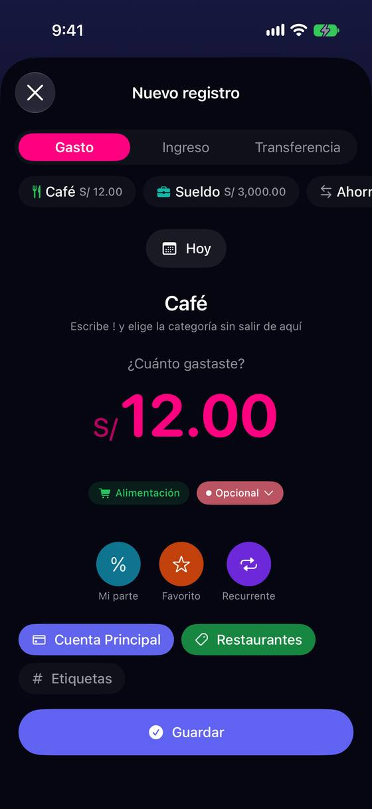
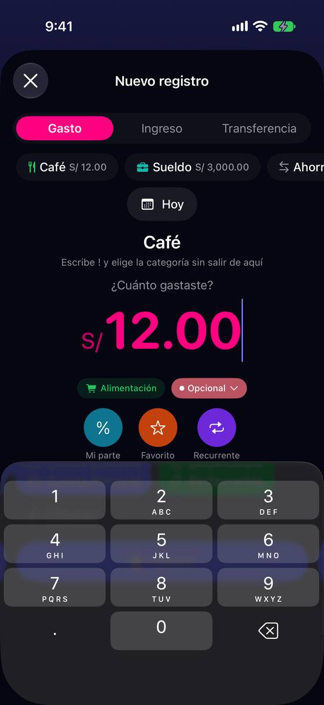
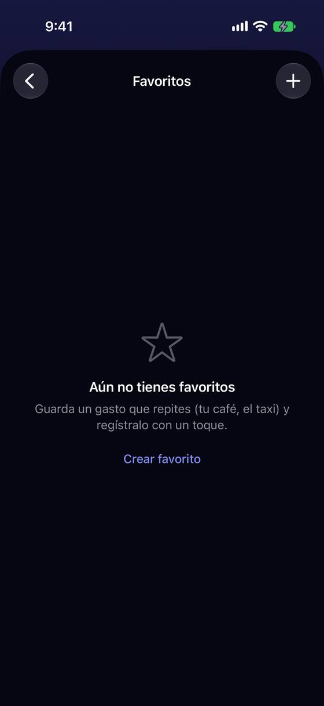
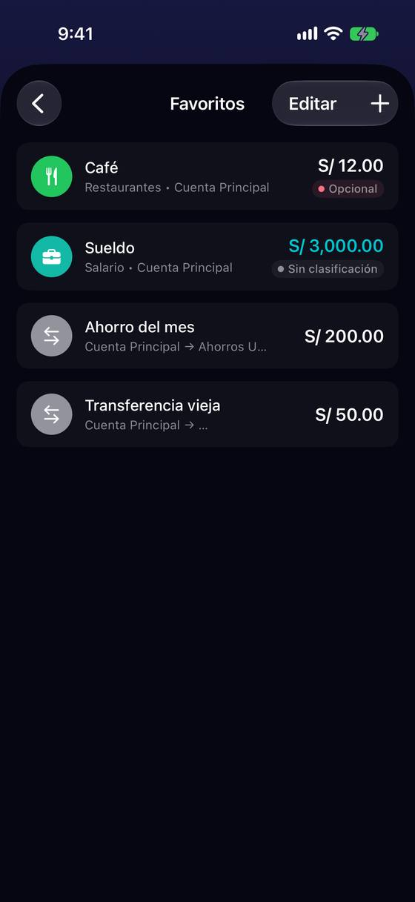
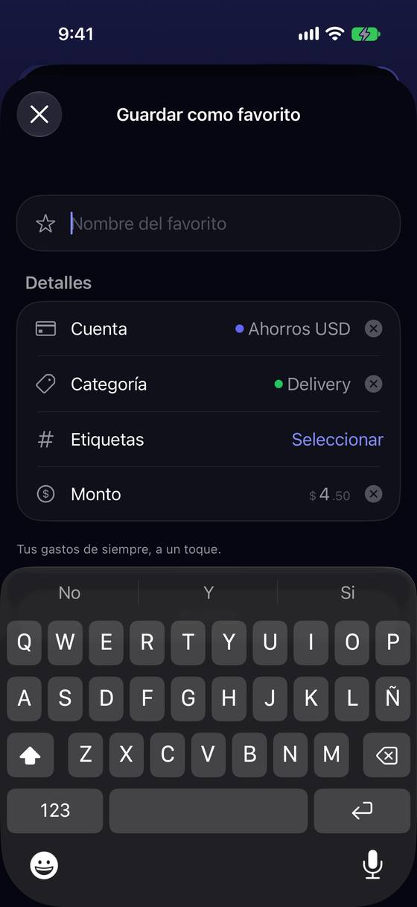

Repetir un favorito no es «un toque»: rellena con el importe guardado y solo vive dentro del formulario
Hoy
Capturas del simulador (app de origin/2.3, semillas de prueba). Pasos hoy: Panel → «Nuevo registro» → «Café» → «Guardar» = 3 toques; con otro importe, +1 toque, 5 borrados y 4 teclas.





De dónde sale
- Captura Captura 16: «Café» rellena S/ 12.00, Restaurantes y Cuenta Principal; falta «Guardar».
- Captura Captura 18: «Guarda un gasto que repites (tu café, el taxi) y regístralo con un toque». Captura 23: «Tus gastos de siempre, a un toque».
- Medido «Ver todos» está en x = 792 pt en una pantalla de 402 pt (XCUITest no pudo tocarlo sin desplazar la fila).
- Código
NewTransactionView.swift:1005-1020: al tomar el foco solo se vacía un importe «0»; «12.00» se queda. - Código
FavoritesListView.swift:161:.onDeletesin confirmación; el editor sí pregunta. - Código Los favoritos de transacción no aparecen en el Panel (solo los de presupuestos).
Las opciones
De 3 a 5 alternativas con el mismo caso. Desliza cada recorrido; el anillo cian marca dónde toca Ana.
El favorito abre con el importe listo para cambiar
Tocar un favorito rellena el formulario y deja el importe seleccionado con el teclado abierto: si hoy costó otra cosa, se escribe encima; si no, «Guardar». Un favorito sin importe (variable) pide el importe así.
A favor
- Cambiar el importe no pide borrar 12.00 a mano (hoy, 5 borrados).
- Igual de rápido si el importe no cambia.
En contra
- Abre el teclado aunque el importe sea fijo (el alquiler): para esos, el teclado sobra.
- Necesita la barra del problema 1 (G1) para que «Guardar» se vea con el teclado.
Los favoritos también en el Panel
Bajo «Nuevo registro», una fila «Tus favoritos». Tocar uno abre el formulario ya relleno con el importe seleccionado (como F1); un favorito sin importe dice «¿cuánto?».
A favor
- Repetir el café pasa a 2 toques desde el Panel si no cambia el importe.
- Hace visibles los favoritos a quien nunca abrió Ajustes › Favoritos.
En contra
- Una fila más en un Panel ya cargado (la revisión del Panel pide aligerarlo).
- Hay que decidir cuántos caben y en qué orden (más usados).
Un toque largo guarda el favorito tal cual, con «Deshacer»
En la fila de favoritos, tocar rellena (como hoy) y mantener pulsado ofrece «Guardar ya · S/ 12.00». Lo guarda sin abrir nada más y avisa con «Deshacer».
A favor
- Es de verdad «un toque» (largo) para lo que se repite igual.
- No cambia el toque corto de L2-13.
En contra
- Un gesto escondido: quien no lo descubre no lo usa.
- Solo sirve si el importe es el de siempre: el café de 4.50 sigue pidiendo el formulario.
- Guardar sin ver la fecha ni la cuenta puede equivocarse.
El texto deja de prometer «un toque»
Sin tocar el comportamiento: los textos dicen lo que pasa. «Guarda un gasto que repites y apúntalo en dos toques: elígelo y guarda» (lista vacía) y «Tus gastos de siempre, ya rellenos» (guardar como favorito).
A favor
- Cambio de texto en 16 idiomas; nada más.
- Deja de prometer algo que la app no hace.
En contra
- No ahorra ni un toque.
- Cambia la expectativa, no la experiencia.
Lado a lado
La última pantalla de cada recorrido, frente a hoy.
Comparación
| Opción | Pasos para el caso (maqueta) | Esfuerzo | Riesgo | Reabre |
|---|---|---|---|---|
| Hoy | Panel → «Nuevo registro» → «Café» → «Guardar» = 3 toques; con otro importe, +1 toque, 5 borrados y 4 teclas. | — | — | — |
| F1 · El favorito abre con el importe listo para cambiar | 3 toques + 4 teclas (desde el formulario) | bajo | bajo | — |
| F2 · Los favoritos también en el Panel | 2 toques (importe igual) · 2 toques + 4 teclas (otro importe) | medio | bajo | — |
| F3 · Un toque largo guarda el favorito tal cual, con «Deshacer» | 2 gestos desde el formulario | bajo-medio | medio | — |
| F4 · El texto deja de prometer «un toque» | igual que hoy | muy bajo | bajo | — |
Lente de perfiles
Perfiles simulados, no entrevistas Los siete perfiles de la revisión del usuario nuevo, usados como lentes. riesgo alto de trabarse · medio · bajo.
| Perfil | Hoy | F1 | F2 | F3 | F4 |
|---|---|---|---|---|---|
| P1 · Migrante de Excel | borra 12.00 cada vez | — | — | — | — |
| P2 · Principiante abrumado | no los encuentra | ve qué cambiar | los ve | no lo descubre | texto claro |
| P3 · Anotador rápido que no lee | esperaba un toque | — | 2 toques | lo más corto | sigue largo |
| P4 · Experto de otra app | quiere repetir sin formulario | — | — | — | — |
| P5 · Llega por una invitación de grupo | — | — | — | — | — |
| P6 · Varias monedas y tarjeta | — | — | — | no ve la moneda | — |
| P7 · Texto grande, a veces en iPad | «Ver todos» fuera de la pantalla | teclado abierto con texto grande | chips pequeños con texto grande | pulsación larga cuesta | — |
Recomendación: F1
Seleccionar el importe al aplicar el favorito quita los cinco borrados sin cambiar L2-13, y es la base de F2 (llevar la fila al Panel), que es lo que más acorta para quien repite gastos. F4 es lo mínimo si no se toca el comportamiento; F3 es corto pero escondido.
Qué decide Jürgen
- ¿Importe seleccionado al aplicar un favorito (F1)?
- ¿Fila de favoritos en el Panel (F2), sabiendo que la revisión del Panel pide aligerarlo?
- ¿Deslizar para borrar un favorito pregunta antes, como el editor?
Revisión por vistas 2.3 · Nuevo registro. Maquetas en HTML con datos ficticios: no son la app. Pasos contados sobre las maquetas; los de «Hoy», en el simulador o en el código citado.